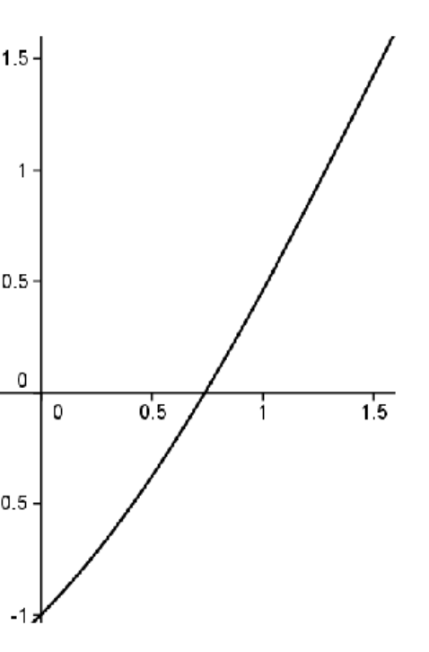
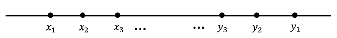

Section 9.1 The Nested Interval Property: Completeness of the Real Number System
In deriving the
Lagrange and
Cauchy forms of the remainder for Taylor series, we made use of the
Extreme Value Theorem (
EVT) and
Intermediate Value Theorem (
IVT). In
Chapter 8, we produced an analytic definition of continuity that we can use to prove these theorems. Before we can work out the rest of the tools needed for those proofs we need to explore the make–up of the real number system.
To illustrate what we mean, suppose that we have only the rational number system available. We can still use our definition of continuity and can still consider continuous functions such as
\(f(x)=x^2\text{.}\)
Notice that
\(2\) is a value that lies between
\(f(1)=1\) and
\(f(2)=4\) so the
IVT says that somewhere between
\(1\) and
\(2\text{,}\) \(f\) must take on the value
\(2\text{.}\) That is, there must exist some number
\(c\in[1,2]\) such that
\(f(c)=2\text{.}\) You might say, “Big deal! Everyone knows
\(c=\sqrt{2}\) works.”
However, we are only working with rational numbers and
\(\sqrt{2}\) \(\)is not rational. As we saw in
Chapter 2 the rational number system has holes in it, whereas the real number system doesn’t. Again, “Big deal! Let’s just say that the real number system contains (square) roots.”
This sounds reasonable and it actually works for square roots, but consider the function
\(f(x)=x-\cos x\text{.}\) We know this is a continuous function (Why?). We also know that
\(f(0)=-1\) and
\(f(\frac{\pi}{2})=\frac{\pi}{2}\text{.}\) Thus according to the
IVT, there should be some number
\(c\in[0,\frac{\pi}{2}]\text{,}\) where
\(f(c)=0\text{.}\) The graph of
\(f(x)=x-\cos x\) is shown below.

The situation is not as transparent as before. What is this mysterious
\(c\) where the curve crosses the
\(x\) axis? Somehow we need to convey the idea that the real number system is a continuum, that it is
complete. That is, it has no holes in it.
How about this? Why don’t we just assume that it has no holes in it? Sometimes the simplest answer works best! We could do that. More complicated statements have been taken as axioms in the past. But how are we going to formulate a rigorous proof based on the statement, “There are no holes in the real numbers�
Also, going back to the Greeks (and possibly further) the thrust of mathematics has always been to keep our axioms as simple and self–evident as possible and to prove more complicated statements from the axioms. If possible. So we’d prefer to make a simpler assumption (axiom) and use it to show that there are no holes in the real numbers.
We will see that there are several different, but equivalent assumptions we can make that will convey the notion of
completeness. We will explore some of them in this chapter. For now we adopt the following as our
Completeness Axiom for the real number system.
Axiom 9.1.1. Nested Interval Property of the Real Number System (NIP).
Suppose we have two sequences of real numbers
\(\left(x_n\right)\) and
\(\left(y_n\right)\) satisfying the following conditions:
-
\(x_1\leq x_2\leq x_3\leq\ldots\) (this says that the sequence,
\(\left(x_n\right)\text{,}\) is non-decreasing)
-
\(y_1\geq y_2\geq y_3\geq\ldots\) (this says that the sequence,
\(\left(y_n\right)\text{,}\) is non-increasing)
-
\(\forall\) \(n\text{,}\) \(x_n\leq y_n\)
-
\(\displaystyle \lim_{n\rightarrow\infty}\left(y_n-x_n\right)=0\)
Then there exists a unique number
\(c\) such that
\(x_n\leq c\leq y_n\) for all
\(n\text{.}\)
Geometrically, we have the following situation.

Notice that we have two sequences
\(\left(x_n\right)\) and
\(\left(y_n\right)\text{,}\) one increasing (really non-decreasing) and one decreasing (non-increasing). These sequences do not pass each other. In fact, the following is true:
Problem 9.1.2.
Let
\((x_n), (y_n)\) be sequences as in the
NIP. Show that for all
\(n, m \in\NN\text{,}\) \(x_n\le y_m\text{.}\)
They are also coming together in the sense that
\(\limit{n}{\infty}{\left(y_n-x_n\right)}=0\text{.}\) The
NIP says that in this case there is a unique real number
\(c\) in the middle of all of this:
\(x_n\leq c\leq y_n\) for all
\(n\in\NN\text{.}\)
If there was no such
\(c\) then there would be a hole where these two sequences come together. The
NIP guarantees that there is no such hole. We do not need to prove this since an axiom is, by definition, a self evident truth. We are taking it on faith that the real number system has this property. The next problem shows that the completeness property distinguishes the real number system from the rational number system.
Problem 9.1.3.
(a)
Find two sequences of rational numbers
\(\left(x_n\right)\)and
\(\left(y_n\right)\) which satisfy all four conditions of the
NIP and such that there is no rational number
\(c\) satisfying the conclusion of the
NIP.
Hint.
Consider the decimal expansion of an irrational number.
(b)
Find two sequences of rational numbers
\(\left(x_n\right)\) and
\(\left(y_n\right)\) which satisfy all four conditions of the
NIP and such that there is a rational number
\(c\) satisfying the conclusion of the
NIP.
You might find the name
Nested Interval Property to be somewhat curious since it doesn’t explicitly identify any intervals as such. But in light of
Problem 9.1.2 it should be clear that the sequences
\((x_n)\) and
\((y_n)\) are the left and right endpoints of a set of nested intervals
\([x_1,y_1]\supseteq[x_2,y_2]\supseteq[x_3,y_3]\supseteq\cdots\text{,}\) whose lengths
\(y_n-x_n\) are shrinking to
\(0\text{.}\) The conclusion says that the intersection of these intervals is non–empty and in fact, consists of a single point. That is, it says
\begin{equation*}
\bigcap_{n=1}^\infty[x_n,y_n]=\{c\}\text{.}
\end{equation*}
Intuitively, the sequences
\(\left(x_n\right)\) and
\(\left(y_n\right)\) in the
NIP appear to converge to
\(c\text{.}\) This is in fact, true and can be proven rigorously. This will prove to be a valuable piece of information for us.
Theorem 9.1.4.
Suppose that we have two sequences \(\left(x_n\right)\) and \(\left(y_n\right)\) satisfying all of the assumptions of the Nested Interval Property. If \(c\) is the unique number such that \(x_n\leq c\leq y_n\) for all \(n\text{,}\) then
\begin{equation*}
\limit{n}{\infty}{x_n}=c =
\limit{n}{\infty}{y_n}\text{.}
\end{equation*}
Problem 9.1.5.
To illustrate the idea that the
NIP plugs the holes in the real line, we will prove the existence of square roots of nonnegative real numbers.
Theorem 9.1.6.
Suppose
\(a\in\mathbb{R},\,a\geq 0\text{.}\) There exists a real number
\(c\geq 0\) such that
\(c^2=a\text{.}\)
Notice that we can’t just say, “Let
\(c=\sqrt{a}\text{,}\)†since the idea is to show that this square root exists. In fact, throughout this proof, we cannot really use a square root symbol as we haven’t yet proved that square roots exist. The idea behind the proof illustrates how the
NIP is used in practice.
Sketch of Proof.
Our strategy is to construct two sequences which will narrow in on the number
\(c\) that we seek. Observe that we need to find a number
\(x_1\) such that
\(x_1^2\leq a\) and a number
\(y_1\) such that
\(y_1^2\geq a\text{.}\) (Remember that we can’t say
\(x_1\lt\sqrt{a}\) and
\(y_1\gt\sqrt{a}\) since our goal is to show that
\(\sqrt{a} \) exists.) There are many possibilities, but how about
\(x_1=0\) and
\(y_1=a+1?\) You can check that these will satisfy
\(x_1^2\leq a\leq\) \(y_1^2\text{.}\) Furthermore
\(x_1\leq
y_1\text{.}\) This is the starting point.
The technique we will employ is often called a bisection technique, and is a useful way to set ourselves up for applying the
NIP. Let
\(m_1\) be the midpoint of the interval
\([\,x_1,y_1]\text{.}\) Then either we have
\(m_1^2\leq
a\) or
\(m_1^2\geq a\text{.}\) In the case
\(m_1^2\leq a\text{,}\) we really want
\(m_1\) to take the place of
\(x_1\) since it is larger than
\(\,x_1\text{,}\) but still represents an underestimate for what would be the square root of
\(a\text{.}\) This thinking prompts the following move. If
\(m_1^2\leq
a\text{,}\) we will relabel things by letting
\(x_2=m_1\) and
\(y_2=y_1\text{.}\) The situation looks like this on the number line.
In the other case where
\(a\leq m_1^2\text{,}\) we will relabel things by letting
\(x_2=x_1\) and
\(y_2=m_1\text{.}\) The situation looks like this on the number line.
In either case, we’ve reduced the length of the interval where the square root lies to half the size it was before. Stated in more specific terms, in either case we have the same results:
\begin{align*}
x_1\leq x_2\leq y_2\leq y_1,
\amp{} \amp{}
x_1^2\leq a\leq y_1^2,
\amp{}\amp{}
x_2^2\leq a\leq y_2^2,\\
\end{align*}
and
\begin{align*}
\amp{}
y_2-x_2=\frac{1}{2}\left(y_1-x_1\right).
\end{align*}
Now we play the same game, but instead we start with the interval \([x_2,y_2]\text{.}\) Let \(m_2\) be the midpoint of \([x_2,y_2]\text{.}\) Then we have \(m_2^2\leq a\) or \(m_2^2\geq a\text{.}\) If \(m_2^2\leq a\text{,}\) we relabel \(x_3=m_2\) and \(y_3=y_2\text{.}\) If \(a\leq m_2^2\text{,}\) we relabel \(x_3=x_2\) and \(y_3=m_2\text{.}\) In either case, we end up with
\begin{equation*}
x_1\leq x_2\leq x_3\leq y_3\leq y_2\leq y_1,
\end{equation*}
\begin{align*}
x_1^2\leq a\leq y_1^2,
\amp{}\amp{}
x_2^2\leq a\leq y_2^2,
\amp{}\amp{}
x_3^2\leq a\leq y_3^2,\\
\end{align*}
and
\begin{align*}
y_3-x_3=\frac{1}{2}\left(y_2-x_2\right)=\frac{1}{2^2}\left(y_1-x_1\right).
\end{align*}
Continuing in this manner, will produce two sequences, \(\left(x_n\right)\)and \(\left(y_n\right)\) satisfying the following conditions:
- Condition 1:
\(\displaystyle x_1\leq x_2\leq x_3\leq\ldots\)
- Condition 2:
\(\displaystyle y_1\geq y_2\geq y_3\geq\ldots\)
- Condition 3:
\(\forall\) \(n\text{,}\) \(x_n\leq y_n\)
- Condition 4:
\(\displaystyle \lim_{n\rightarrow\infty}\left(y_n-x_n\right)=\,\lim_{n\rightarrow\infty}\frac{1}{2^{n-1}}\left(y_1-x_1\right)=0\)
- Condition 5:
These sequences also satisfy the following property:
\begin{equation*}
\forall n,\,x_n^2\leq a\leq y_n^2
\end{equation*}
Conditions 1 through 4 tell us that
\(\left(x_n\right)\)and
\(\left(y_n\right)\) satisfy all of the conditions of the
NIP, so we can conclude that there must exist a real number
\(c\) such that
\(x_n\leq c\leq y_n\) for all
\(n\text{.}\) At this point, you should be able to use Condition 5. to show that
\(c^2=a\) as desired.
Problem 9.1.7.
The bisection method we employed to prove
Theorem 9.1.6 is also pretty typical of how we will use the
NIP, as it ensures that we will create a sequence of nested intervals with meet all of the conditions specified in the
NIP. We will employ this strategy in the proofs of the
IVT and
EVT. Deciding how to relabel the endpoints of our intervals will be determined by what we want to do with these two sequences of real numbers. This will typically lead to a fifth property, which will be crucial in proving that the
\(c\) guaranteed by the
NIP does what we want it to do. Specifically, in the above example, we always wanted our candidate for
\(\sqrt{a}\) to be in the interval
\([\,x_n,y_n]\text{.}\) This judicious choice led to the extra Condition 5:
\(\forall\) \(n,\,x_n^2\leq a\leq y_n^2\text{.}\) In applying the
NIP to prove the
IVT and
EVT, Condition 5 is what will change based on the property we want
\(c\) to have.
Before we tackle the
IVT and
EVT, let’s use the
NIP to address an interesting question about the Harmonic Series. Recall that the Harmonic Series,
\(1+\frac{1}{2}+\frac{1}{3}+\frac{1}{4}+\cdots\text{,}\) grows without bound. That is,
\(\sum_{n=1}^\infty\frac{1}{n}=\infty\text{.}\) The question is how slowly does this series grow? For example, how many terms would it take before the series surpasses 100? Or 1000? Or 10000?
Leonhard Euler decided to tackle this problem in the following way. He decided to consider the
\begin{equation}
\limit{n}{\infty}{\left[\left(1+\frac{1}{2}+\frac{1}{3}+\cdots+
\frac{1}{n}\right)-\ln(n+1)\right]} \text{.}\tag{11}
\end{equation}
This limit is called Euler’s constant and is traditionally denoted by
\(\gamma\text{.}\) Equation (11) says that for very large values of
\(n\text{,}\) we have
\begin{equation*}
1+\frac{1}{2}+\frac{1}{3}+\cdots+\frac{1}{n}\approx
\ln\left(n+1\right)+\gamma\text{.}
\end{equation*}
If we could approximate \(\gamma\text{,}\) then we could replace the inequality \(1+\frac{1}{2}+\frac{1}{3}+\cdots+\frac{1}{n}\geq 100\) with the more tractable inequality ln\(\left(n+1\right)+\gamma\) \(\geq 0\) and solve for \(n\) in this. This should tell us roughly how many terms would need to be added in the Harmonic Series to surpass 100. Approximating \(\gamma\) with a computer is not too bad. We could make \(n\) as large as we wish in \(\left(1+\frac{1}{2}+\frac{1}{3}+\cdots+\frac{1}{n}\right)-\)ln\(\left(1+n\right)\) to make closer approximations for \(\gamma\text{.}\) The real issue is, how do we know that
\begin{equation*}
\limit{n}{\infty}{\left[\left(1+\frac{1}{2}+\frac{1}{3}+\cdots+
\frac{1}{n}\right)-\ln(n+1)\right]}
\end{equation*}
actually exists? As of the time we are writing this book it is not even known if \(\gamma\) is rational or irrational. So in our opinion, the existence of this limit is not obvious. And even if it were, a formal proof would be required.
We will use the
NIP to show that this limit does in fact exist. The details are in the following problem.
Problem 9.1.8.
(a)
Let \(x_n=\left(1+\frac{1}{2}+\frac{1}{3}+\cdots+\frac{1}{n}\right)-\ln\left(n+1
\right)\text{.}\) Use the following diagram to show
\begin{equation*}
x_1\leq x_2\leq x_3\leq\cdots
\end{equation*}
(b)
Let
\(z_n=\ln\left(n+1\right)-\left(\frac{1}{2}+\frac{1}{3}+\cdots+\frac{1}{n+1}
\right)\text{.}\) Use a similar diagram to show that
\(z_1\leq z_2\leq z_3\leq\cdots\text{.}\)
(c)
Let
\(y_n=1-z_n\text{.}\) Show that
\(\left(x_n\right)\) and
\(\left(y_n\right)\) satisfy the hypotheses of the nested interval property and use the
NIP to conclude that there is a real number
\(\gamma\) such that
\(x_n\leq\gamma\leq y_n\) for all
\(n\text{.}\)
(d)
Conclude that
\(\limit{n}{\infty}{\left[\left(1+\frac{1}{2}+\frac{1}{3}+\cdots+
\frac{1}{n}\right)-\ln\left(n+1\right)\right]}=\gamma\text{.}\)
Problem 9.1.9.
(a)
Use the inequality
\(x_n\leq\gamma\leq y_n\) for all
\(n\) to approximate
\(\gamma\) to three decimal places.
(b)
Use the fact that for large \(n\text{,}\) \(1+\frac{1}{2}+\frac{1}{3}+\cdots+\frac{1}{n}\approx
\ln\left(n+1\right)+ \gamma\) to determine approximately how large \(n\) must be to make
\begin{equation*}
1+\frac{1}{2}+\frac{1}{3}+\cdots+\frac{1}{n}\geq 100\text{.}
\end{equation*}
(c)
Suppose we have a supercomputer which can add
\(10\) trillion terms of the Harmonic Series per second. Approximately how many times the current age of the Earth would it take for this computer to sum the Harmonic Series until it surpasses
\(100\text{?}\)